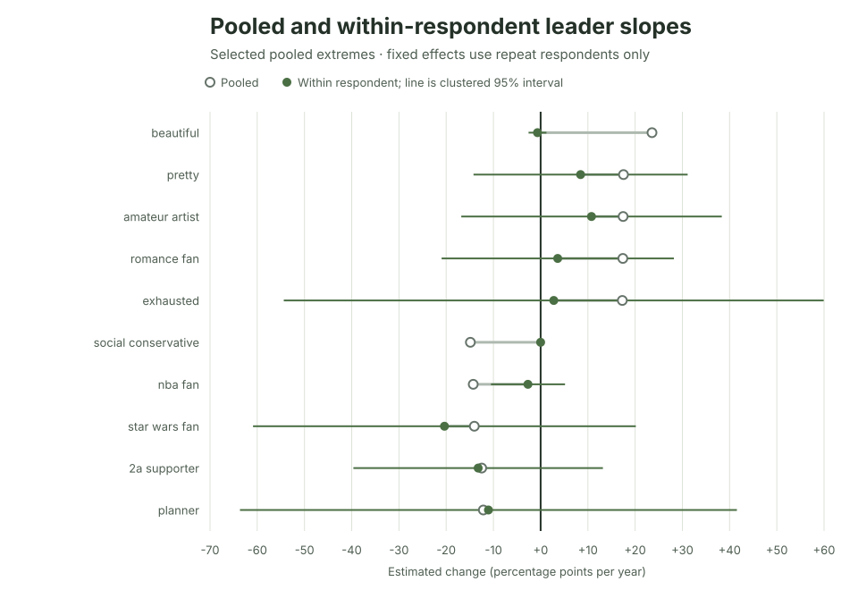

Ipseity Daily Pulse · 2026-09-19
A sample trend is not necessarily change within people
A changing response sample is not the same estimand as change within returning people.
By Ceetown · 3 minute read
Ipseity Daily's largest current sample trend changes sharply when the question changes from “Are later answers different?” to “Did the same people answer differently later?”
Across all responses, beautiful has an estimated +23.6
percentage-point annual trend. Among the 30 respondents who answered
that signifier on multiple dates, a respondent-fixed-effect estimate is
-0.7 points, with a clustered interval from -2.6 to +1.2. Across the 20
most extreme pooled trends, only 13 kept their direction in the
within-person comparison, and the median absolute shift was 13.9 points
per year.
This is a diagnostic, not evidence that the within-person estimate is the truth. Repeat respondents are a small, selected subset, and the 20 signifiers were selected because their pooled estimates were extreme. The comparison shows why a changing sample and change within people are different research questions.
Source: Ipseity Daily download page

Evidence note
The values use canonical microdata through 2026-09-18, retrieved at
2026-09-19T10:07:11Z. Fixed-effect estimates use only respondents who
answered the same signifier on multiple dates. Two of the 20 selected
signifiers had no endorsement switches among repeat respondents, making
their observed zero slopes mechanical rather than evidence of exact
population stability. Full estimates and limitations are recorded in CURRENT-FINDINGS.md and outputs/leader-within-respondent-sensitivity.csv.
Snapshot note: This dated entry and figure are preserved from the stated check. Links to the cumulative report and aggregate tables may show newer data.